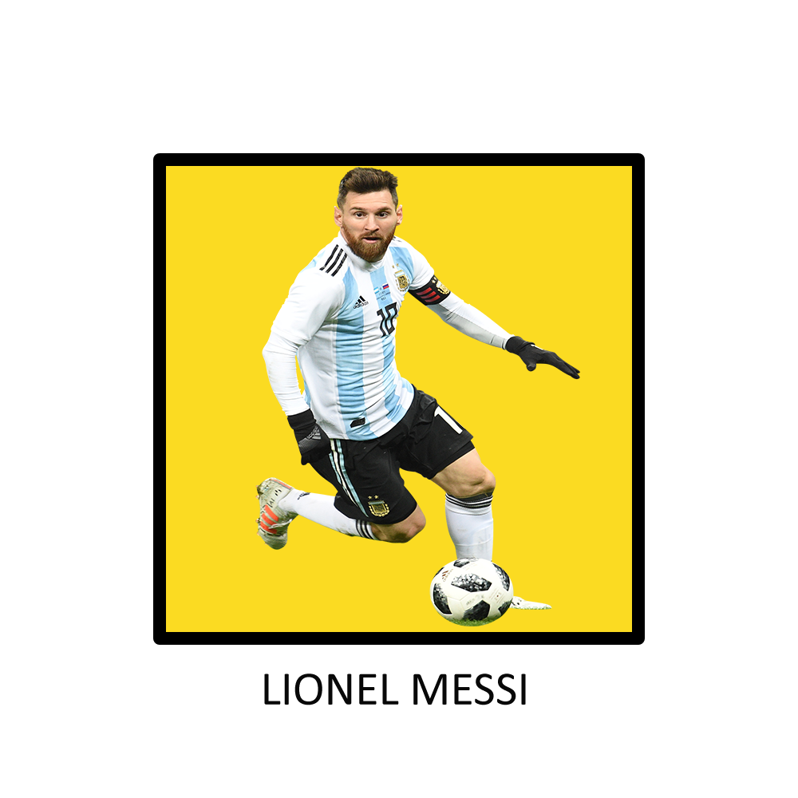
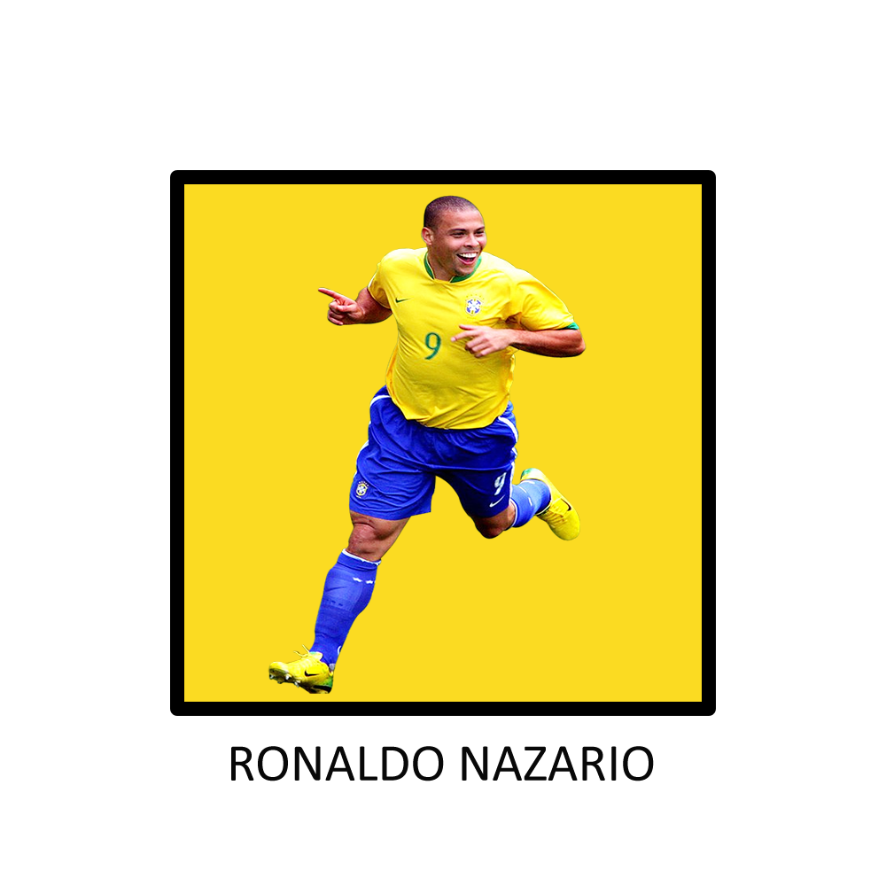

JUGADORES HISTÓRICOS   Que mejor forma de arrancar este blog futbolero, que con dos semejantes cracks como éstos, Leo y el verdadero Ronaldo, sin desestimar lo enorme que es Cristiano, pero lo poco que vi del brasilero, quedé totalmente enamorado de su soltura, engaños, gambetas y de sus definiciones precisas totalmente engañosas para cualquier arquero que se anime a hacerle frente. Por otro lado, podría estar tranquilamente el Diego, pero al tener mi edad, crecí y me enamoré del fútbol con bestias como ésta, un tal Lionel Andrés que algo bien hizo en su carrera... Que decir de éste extraterrestre que siempre mentalmente está 10 pasos adelante de cualquier otro jugador, teniendo claro la jugada que pasó, la que está pasando en el momento, y las próximas 3 o 4 posibles descartando cualquiera que no pueda funcionar, y siempre (o casi siempre para los haters de la pulga) eligiendo la correcta. Dos referentes fubolísticos que viven y vivieron éste deporte que tantas personas aman, con total alegría y pasión.